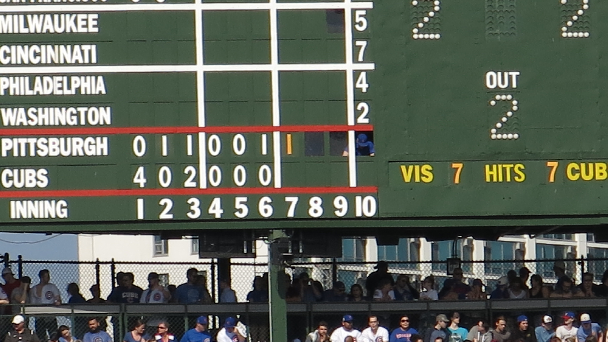

1937–present
Chicago Cubs (in-house; installed when Bill Veeck rebuilt the bleachers)
Wrigley Field Hand-Turned Scoreboard (1937–)
A human being lives inside the display and slots steel numerals by hand while watching a computer
